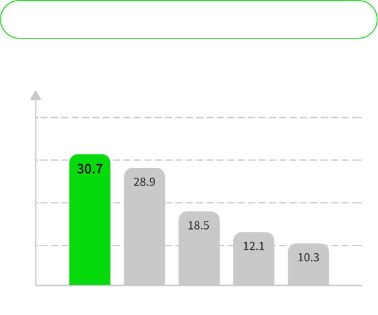

논란되다
요즘 어휘력
expand_more
기획의도
최근 인터넷에서 젊은 층을 중심으로 ‘심심한 사과’, ‘무료하다’, ‘연세’ 등의 한자어를 모르는,
세대 간 언어 소통 문제가 논란이 되었고, 다양한 형태의 뉴미디어의 등장으로 인해 정보 습득 방법,
현저히 떨어지는 독서량 등의 문제를 가져왔다. 한자어의 필요성을 느끼지 못하는 젊은 층을
중심으로 문해력이 심각한 문제로 대두되어 있어 이를 인지할 필요가 있다.
<요즘 어휘력>프로젝트에서는 어휘력 퀴즈인 '맞추다'와 책 추천 '학습하다'를 통해,
젊은 층이 잘 모르는 단어에 더 친숙하게 접근하고자 한다.
세대 간 언어 소통 문제가 논란이 되었고, 다양한 형태의 뉴미디어의 등장으로 인해 정보 습득 방법,
현저히 떨어지는 독서량 등의 문제를 가져왔다. 한자어의 필요성을 느끼지 못하는 젊은 층을
중심으로 문해력이 심각한 문제로 대두되어 있어 이를 인지할 필요가 있다.
<요즘 어휘력>프로젝트에서는 어휘력 퀴즈인 '맞추다'와 책 추천 '학습하다'를 통해,
젊은 층이 잘 모르는 단어에 더 친숙하게 접근하고자 한다.
문해력 실험 설문조사 결과
(기간 : 2021월 2월 13일 - 3월 13일 / 대상 : 성인 883명 / 단위 : %)




상단의 그래프는 2021년, TV에서 방영한 ‘EBS 당신의 문해력’ 중 성인 20·30세대 883명을 대상으로 설문 조사를 진행한 결과이다.
어휘력과 문해력 실태를 확인하고자 시행한 실험 결과에 따르면 응시자들은 11문제 중 평균 6개 정도의 정답을 맞췄고,
이들의 종합적인 평균 점수는 54점으로 집계되었다. 이들 중 글을 읽고 '의견 작성시 어려움을 느낀 적이 있다'에
72.6%가 '그런적이 있다'고 대답했고 '사회생활시 문해력이 필요하다'에 87.9%로 가장 많은 사람이 '그렇다'라고 대답했다.
30.7%의 응시자들이 '일상소통 불가'로 인해 '문해력이 필요하다'고 말했고, '문해력 향상'에 독서가 가장 필요한 것으로 나타났다.
이에 따라, 현대인의 어휘력에 문제가 있음을 알리고 부족한 어휘력의 심각성을 알리고자 한다.
어휘력과 문해력 실태를 확인하고자 시행한 실험 결과에 따르면 응시자들은 11문제 중 평균 6개 정도의 정답을 맞췄고,
이들의 종합적인 평균 점수는 54점으로 집계되었다. 이들 중 글을 읽고 '의견 작성시 어려움을 느낀 적이 있다'에
72.6%가 '그런적이 있다'고 대답했고 '사회생활시 문해력이 필요하다'에 87.9%로 가장 많은 사람이 '그렇다'라고 대답했다.
30.7%의 응시자들이 '일상소통 불가'로 인해 '문해력이 필요하다'고 말했고, '문해력 향상'에 독서가 가장 필요한 것으로 나타났다.
이에 따라, 현대인의 어휘력에 문제가 있음을 알리고 부족한 어휘력의 심각성을 알리고자 한다.
어휘력 랭킹뉴스
많이 본 뉴스